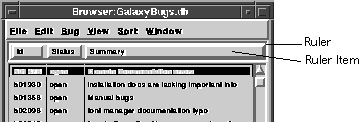

List Ruler
A ruler (vruler) is an object that is typically included in applications to allow end users to manipulate the display of data in an associated data space. The data can be in the form of a domain, list, or text object, or any other type of object. One standard use is for custom representation of tabular information. For example, in Figure 50 a ruler is used to aid the display of information. The ruler item allows the user to spread out or tighten up the columns, rearrange the order of the columns, or sort the data in individual columns (alphabetically, numerically, chronologically, and so on). These tasks are performed by rearranging, expanding, and shrinking the various items on the ruler.

Figure 50. Ruler item in application
A ruler contains an ordered set of objects called ruler items. Ruler items are added and removed from the ruler as needed. A ruler item has a name, a given position and width in the ruler, and a range of other attributes. For example, you can designate a ruler item as resizable or not resizable, removable or not removable, and you can set.the minimum and maximum widths of individual ruler items. Ruler items can be highlighted, usually indicating that the data being displayed is sorted by the ruler items category.
Ruler Behavior
A ruler is manipulated primarily through the mouse. Ruler items can be resized by clicking on the left or right edge of a ruler item and dragging. Ruler items can be rearranged by clicking on the ruler item and dragging the ruler item to another location within the ruler. Dragging the ruler item off the ruler will remove the item from the ruler (if the item is removable). Double-clicking on a ruler item highlights that item by underlining the name of the item. Double-clicking in the ruler but not on an item compacts the ruler so that a minimum fixed distance is placed between all ruler items. As ruler items are manipulated, the application is notified of these ruler changes and can then make changes to how the data below the ruler is displayed.
Table of Contents
Help Map
Need help? Contact Visix.